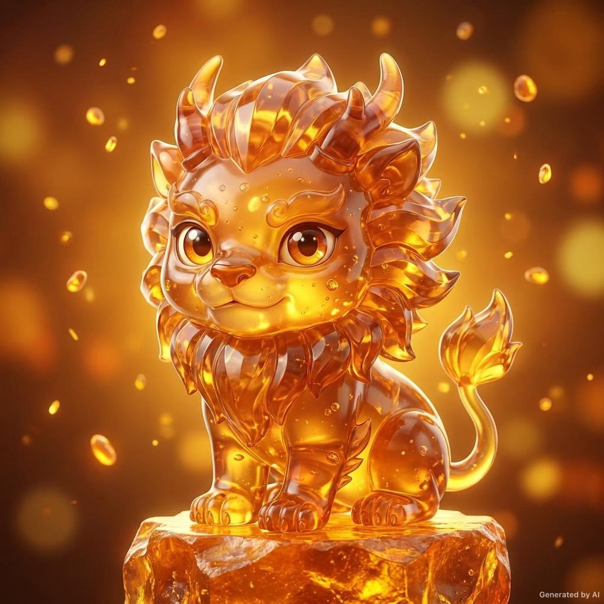
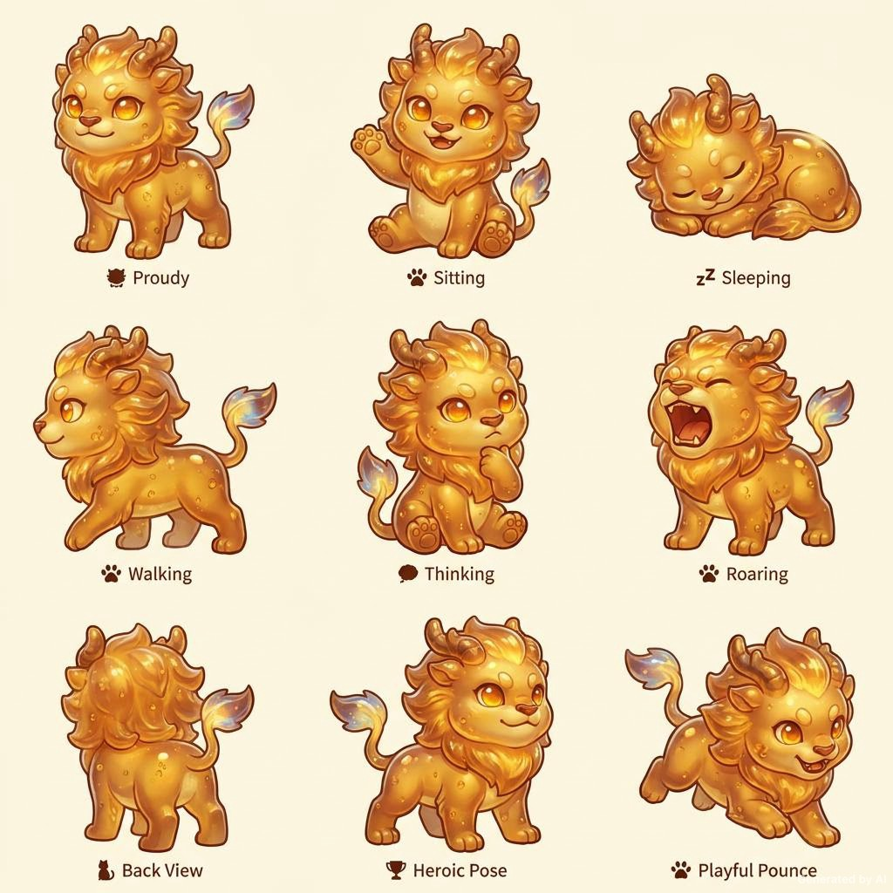
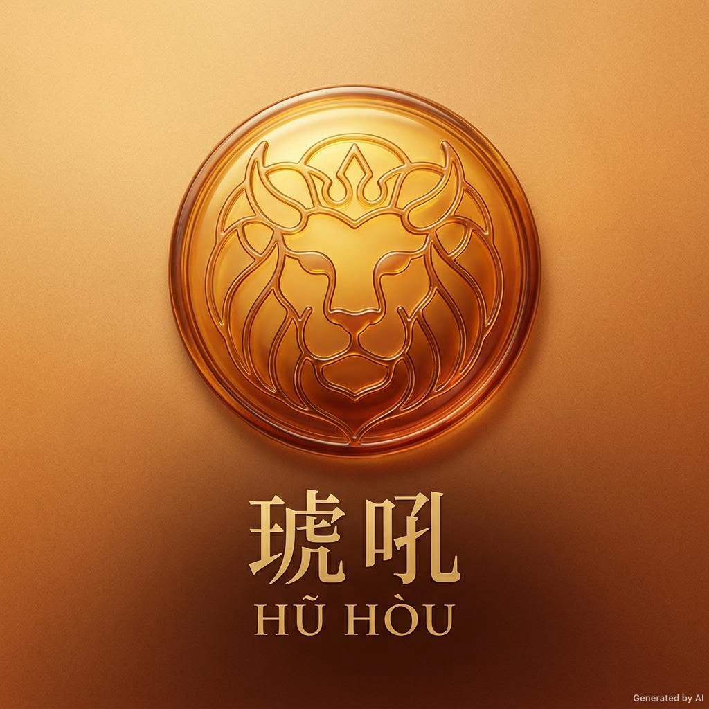

Element
Resin & Light
A Bestiary of Forgotten Resin
The Amber Howl
A warm guardian crystallized from ancient tree resin: luminous, stoic, and alive with a thousand trapped suns. Where mist beasts wander cold, Huhou carries fire.

Scroll
Pose Codex
From sentinel to sleeper, each pose keeps the same silhouette and warm resin core while giving the creature a fuller personality range.

In stillness, the resin dreams. In motion, it burns.

Origin
Long before the first compass pointed north, a conifer valley was struck by falling starlight. The trees bled resin into the roots of the earth, and the amber did not harden into stone. It breathed.
Huhou emerged as light held slowly still: a guardian made not of flesh but of memory, warmth, and patient pressure. It roams the borderlands between artifact and animal, carrying a low resonant hum wherever the dark grows too sure of itself.
Transcribed from the Amber Tablets, Year of the Resin Fox
Vital Statistics
Element
Resin & Light
Habitat
Fossil Forests
Active
Dusk & Twilight
Height
80 cm
Density
Variable
Temperament
Stoic · Loyal
Gift
Healing Warmth
Call
Low Resonant Hum